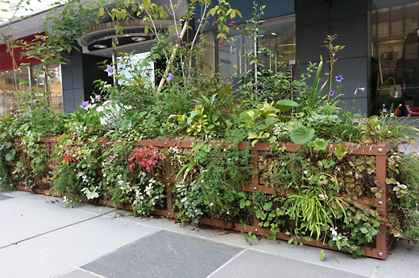

技術紹介
Our Technology
環境貢献を支える都市緑化技術
都市の希少な自然を残し、多様な植物環境を創出するために、
私たちは「植生環境を壊さずに取り入れる」という考えに立ち返りました。
植物が健全に育成し、その地域が持つ環境価値を高めます。
石勝エクステリアの緑化技術
樹木移植『TPM工法』、当社の屋上緑化『ピクニックターフ工法』、壁面緑化『アースウォール工法』の
3工法は当社独自（※発明特許取得済み）の緑化技術です。
-
樹木移植工法
TPM工法
樹木への負担が少なく、効率的な大径木の移植工法。
-
壁面緑化工法
アースウォール

都市における垂直面の緑化は人工的な景観に潤いを与えます。
-
屋内壁面緑化工法
アースウォール・ステージ

簡単な施工方法で屋内に緑の機会と安らぎを創出します。
-
屋上緑化工法
ピクニックターフ

ヒートアイランド現象の緩和や緑のネットワーク形成に最適。
-
立体型緑化工法
バイオキューブ

人工的な建物に立体的な緑の空間を提供。
-
緑地管理技術

緑の環境に関する幅広いご要望にお応えする万全の体制でご対応。
-
住宅造園管理
ガーデンパートナーズ

プロのガーデナーが「お手入れ」について定期的なアドバイスを行う。
-
バンカー再生工法
Re バンカー

資源を廃棄物にしない自然環境にやさしいバンカー再生工法。